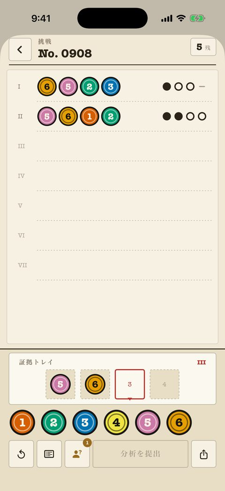
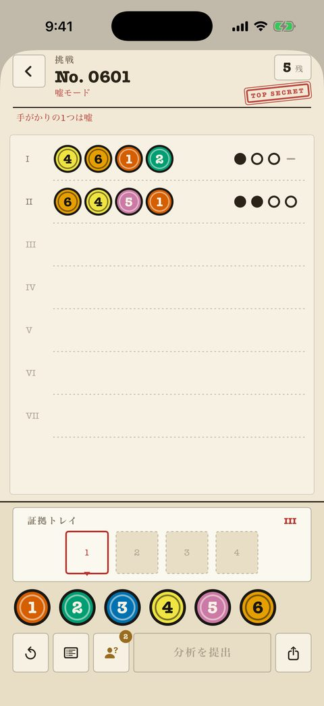
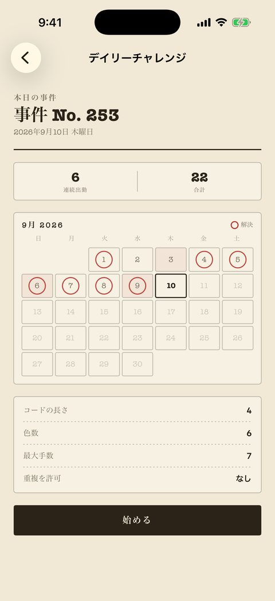

クラシック事件
初級から名人まで240件。1件ごとにファイルの中の番号付きの1枚。残り回数は右上に、印は純粋なインク——点・輪・線——で色に一切頼らない。
- 過去の分析はすべて紙に残り、突き合わせができる。
- 盤上のメモで、除外した色と確定した色を記録できる。
- 「形マーク」設定で色ごとに固有の形が付く。
- 最初の40件は無料。
マスターマインド（ヒットアンドブロー）系のコード解読パズルを、スパイの調書として綴じた iPhone アプリ。分析するたびにインクの印が一列返ってくる。そして嘘のファイルでは、報告のちょうど1つが偽物。
無料で開始 · $2.99 で全解除 · 広告なし · アカウント不要
嘘のファイル · 報告の例 4ピン · 6色
I 行と II 行は同じ4色を使っている。I 行は「どれも含まれない」、II 行は「4つとも含まれる」と言う。両方が真のはずはない——どちらかの報告が偽物だ。
色をスロットに入れて分析を提出する。事件は4ピン6色から始まり、8色の長いコードまで続く。
パレット
スロット
提出した行には4つのインクの印が返る。印はどのピンを指しているかは教えない。その空白こそがパズルだ。
色も位置も正解 色は正解、位置が違う コードに含まれない
分析
報告
この4色のうち2色がコードに含まれる。ただし、どの2色かはまだ分からない。
クラシック事件の報告は常に正直。嘘の事件では1件につき1行が偽造されるので、筋の通った推理でも壁に突き当たることがある。矛盾する2行を見つけ、偽の方を捨てる。
I 行
II 行
I 行は「どれも含まれない」、II 行は「4つとも含まれる」。どちらかの報告が偽物だ。

初級から名人まで240件。1件ごとにファイルの中の番号付きの1枚。残り回数は右上に、印は純粋なインク——点・輪・線——で色に一切頼らない。

別に綴じた240件のファイル。同じ盤面、1件につき偽の報告が1つ、そして紙面を信じるなと促す赤いスタンプ。

1日1問、全員同じ問題。コードの長さ、色数、回数、重複の可否は開始前に公開される。極秘の日は嘘の事件になる。
| モード | 内容 | 利用 |
|---|---|---|
| 本日の事件 | 1日1問の共通問題。連続記録の台帳とウィジェット付き。 | 無料 |
| クラシック事件 | 240件、初級から名人まで、正直な印。 | 40件無料 |
| 嘘の事件 | 240件、1件につき報告の1つが偽物。 | 80件無料 |
| 対戦モード | 1台の端末を交互に。一人がコードを決め、一人が解く。 | 無料 |
| 友達に挑戦状 | 解決した事件をリンクで送る。相手には同じコードが届く。 | 無料 |
| フリープレイ | 好きな難易度で無限に生成される盤面。 | Pro |
| カスタムレベル | 長さ・色数・回数・重複を自分で決めて盤面を作る。 | Pro |
Pro は $2.99 の買い切り。残り 360 件、フリープレイ、エディタが開く。サブスクなし、広告なし、アカウント不要、進行状況は端末から出ない。テーマは「ドシエ」と「夜の机」の2つ。アプリは端末の言語に従い、設定で切り替えることもできる。